① 会社・基本データ
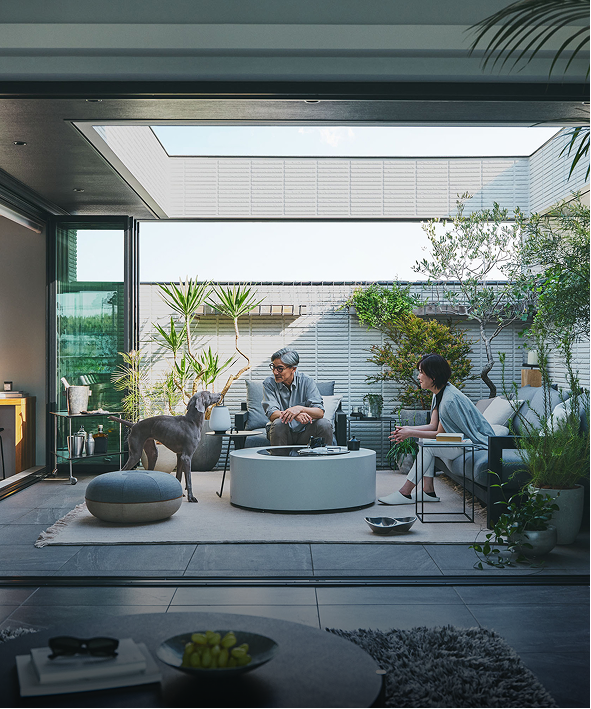
ヘーベルハウスは旭化成ホームズ株式会社が展開する戸建注文住宅ブランド。1972年に旭化成工業の住宅事業部として独立し、ALC（軽量気泡コンクリート）＝ヘーベル板を外壁・床・屋根に使い、重鉄・システムラーメン構造（または軽量鉄骨ハイパワードクロス）と組み合わせた都市型の防災・耐久特化ハウスメーカー。「ロングライフ住宅（60年以上住み継げる家）」を思想の中心に据えている。
| 項目 | 内容 |
|---|---|
| 会社名 | 旭化成ホームズ株式会社 |
| 設立 | 1972年11月（旭化成工業の住宅事業部が独立） |
| 本社 | 東京都千代田区神田神保町1-105 神保町三井ビルディング |
| 資本金 | 32.5億円 |
| 代表者 | 代表取締役社長 大和久 裕二／代表取締役会長 川畑 文俊（2025年4月1日付の社長交代） |
| 親会社 | 旭化成株式会社（東証プライム上場） |
| ブランド名 | ヘーベルハウス（HEBEL HAUS） |
| 売上高 | 9,935億円（2025年3月期連結・4期連続過去最高） |
| 営業利益 | 913億円（前期比14.9%増） |
| 2026年3月期見通し | 連結売上高10,740億円（初の1兆円超え予定） |
| 従業員数 | 12,339名（2025年3月末連結） |
| 建築請負事業売上 | 4,195億円（2025年3月期・前期比4.6%増） |
| 累計建築戸数 | 戸建「ヘーベルハウス」累計20万棟以上 |
| 年間販売戸数 | 約8,500〜9,000棟（戸建て＋集合住宅） |
| 対応エリア | 関東8都県／東海4県／関西6府県／西日本5県の合計25都府県 |
| 事業内容 | 戸建注文住宅「ヘーベルハウス」、賃貸住宅「ヘーベルメゾン」、リフォーム、都市開発 |
一言で言うと？
ALC（ヘーベル板）×鉄骨構造で「60年以上住み継げる都市型防災住宅」を提供するハウスメーカー。鉄骨系HMとしてオリコン顧客満足度鉄骨造部門11年連続1位（2016〜2026年）を獲得している。
対応エリアの特殊性
ヘーベルハウスは全国対応ではなく、25都府県限定の展開。北海道・東北全域・新潟・北陸・四国・山陰・長崎・大分・熊本・宮崎・鹿児島・沖縄は営業エリア外となる。
② 商品ラインナップと坪単価
2026年現在、ヘーベルハウスの坪単価は約95〜110万円がボリュームゾーン。大手HMの中でもトップクラスに高額で、積水ハウスと並ぶポジション。
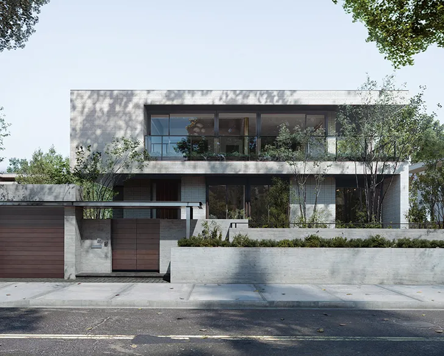
戸建ヘーベルハウスの主要商品
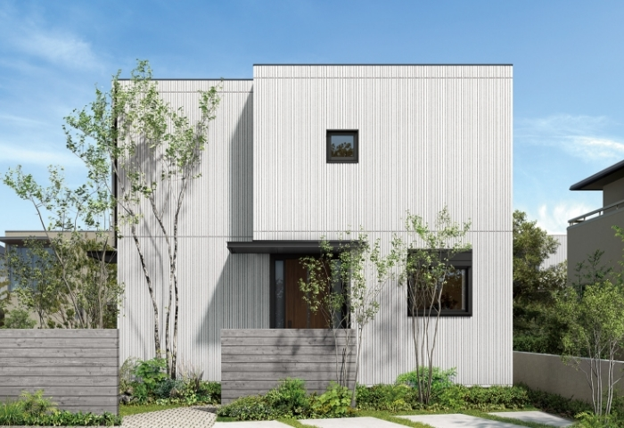
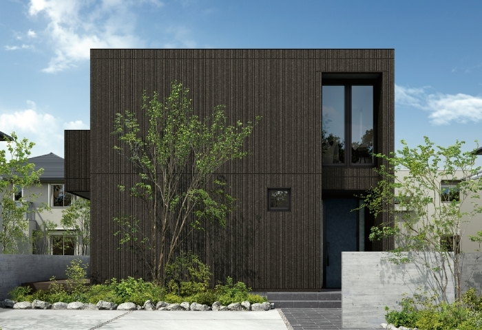
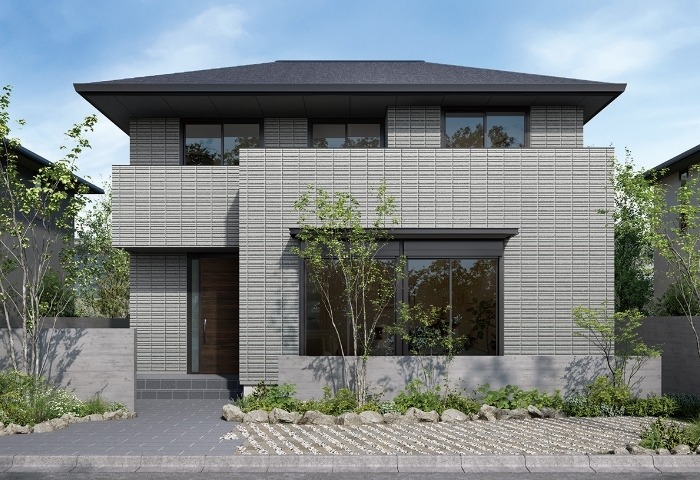
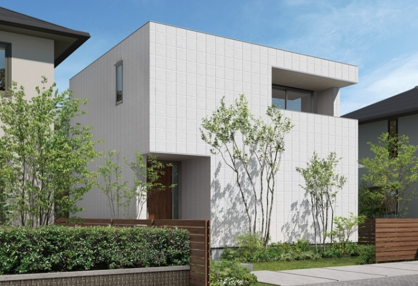
| 商品名 | 坪単価目安（2026年） | 階数 | 主な特徴 |
|---|---|---|---|
| CUBIC（キュービック） | 85〜100万円 | 2階建て | 軽量鉄骨ハイパワードクロス。陸屋根＋屋上活用が前提のスクエアデザイン定番モデル |
| 新大地（SHIN-DAICHI） | 85〜105万円 | 2〜3階建て | 二世帯・多世代住宅の代表格。大屋根＋縁側が特徴 |
| RATIUS|GR | 95〜115万円 | 2階建て | 広いLDKと庭園との繋がりを重視したプレミアム2階建て |
| RATIUS|RD | 110〜135万円 | 2階建て | 2022年発売。重鉄制震・デュアルテックラーメン構造。40〜60坪邸宅向け |
| FREXシリーズ | 125〜160万円 | 2〜4階建て | 重鉄・システムラーメン構造＋サイレス。都市型3階建て・重鉄のフラッグシップ |
| THE LIVING Sky Villa | 150万円〜 | 3階建て | 重鉄・システムラーメンの邸宅シリーズ |
| RAUMFREX | 160〜200万円 | 2〜3階建て | 2020年6月発売の富裕層向けフラッグシップ。天井高最大3.36m・最上位邸宅モデル |
| my DESSIN（マイデッサン） | 70〜90万円 | 2階建て | 軽量鉄骨の規格住宅（セミオーダー）。ヘーベルでは最安ライン |
| 2世帯住宅 ファミリースイート | 95〜115万円 | 2〜3階建て | 二世帯住宅のカスタム対応モデル |
坪単価の相場感（2026年）
| 調査ソース | 平均坪単価 | レンジ |
|---|---|---|
| 不動産売却マイスター（2026年版） | 125万円 | 70〜150万円 |
| THE ROOM TOUR | 93〜99万円 | 84〜111万円 |
| おうちパレット（ユーザー実測） | 93.5万円 | 70〜135万円 |
| ARCHIST集約値 | 95〜110万円 | 70〜160万円 |
坪単価の推移（CUBIC基準・概算）
| 年 | 坪単価目安 | 備考 |
|---|---|---|
| 2015年 | 約75〜85万円 | ウッドショック前 |
| 2020年 | 約80〜90万円 | コロナ影響前 |
| 2023年 | 約85〜100万円 | 資材高騰の影響 |
| 2025年 | 約90〜105万円 | エネルギーコスト高の転嫁 |
| 2026年 | 約95〜110万円 | オプション込み平均約110万円 |
ヘーベルハウスは大手7社の中でもトップクラスに高額。積水ハウスと並び、大和ハウス・三井ホーム・住友林業より一段上の価格帯。「価格は高いが、60年住める防災住宅」というポジショニング。
③ 構造・耐震
ヘーベルハウスの構造は3系統
ヘーベルハウスは商品により採用構造が異なる。他HMが「1構法統一」に対し、ヘーベルは用途に合わせた3構造使い分けが特徴。
| 構造 | 採用商品 | 特徴 |
|---|---|---|
| ハイパワードクロス（軽量鉄骨） | CUBIC・新大地・my DESSIN・RATIUS|GR | 軽量鉄骨＋ブレース（筋交い）＋ヘーベル板。2階建て住宅の標準 |
| 重鉄制震・デュアルテックラーメン構造 | RATIUS|RD | 2022年新開発。重量鉄骨ラーメン＋極低降伏点鋼の制震ダンパー。40〜60坪邸宅向け |
| 重鉄・システムラーメン構造＋サイレス | FREX・THE LIVING Sky Villa・RAUMFREX | 都市型3・4階建て／最上位邸宅向け。オイルダンパー「サイレス」で制震（FREXは2014年5月標準採用開始） |
外壁・床・屋根：ヘーベル板（ALC）
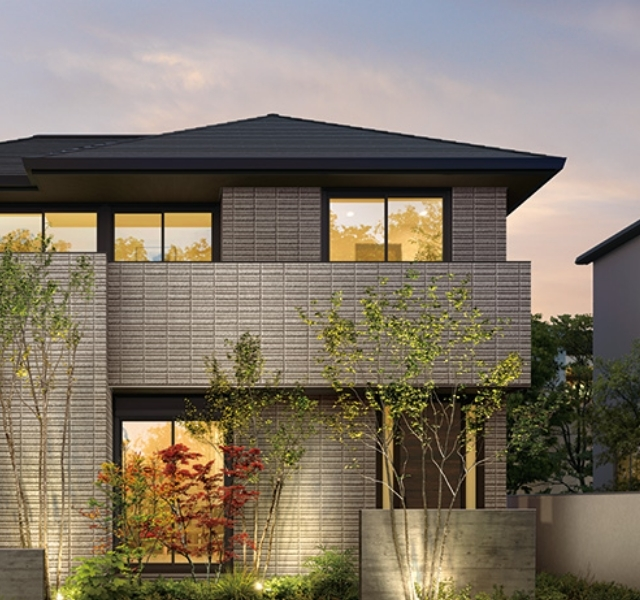
| 項目 | 詳細 |
|---|---|
| ALCとは | 軽量気泡コンクリート（Autoclaved Lightweight Concrete）。珪石・セメント・石灰・アルミ粉を高温高圧蒸気養生で発泡硬化 |
| ヘーベル板厚 | 外壁75mm（耐火構造認定）／床・屋根100mm |
| 重量 | 一般コンクリートの約1/4（気泡80%） |
| 耐火性能 | 国土交通大臣認定の耐火構造材（1時間耐火）・不燃材 |
| 断熱性 | 熱伝導率0.17 W/mK（コンクリートの約1/10） |
| 耐久性 | 旭化成の加速度試験では60年以上の耐久性を確認 |
| 特徴 | 外壁内側に断熱材「ネオマフォーム」をサンドイッチ＝「ヘーベルシェルタード・ダブル断熱構法」 |
耐震等級と実大実験
- 全棟耐震等級3（建築基準法の1.5倍）
- 2011年東日本大震災・2016年熊本地震の最大波形で加振 → 構造損傷なし
- 震度7の揺れを連続10回再現しても構造被害なし（繰り返し加振試験）
- 制震装置「サイレス」（FREXシリーズ搭載）：梁のスライドに合わせピストンが動き、揺れ幅を最大1/2に低減
- 制震装置（RATIUS|RD）：極低降伏点鋼を使った制震ダンパー
基礎
- 布基礎＋べた基礎のハイブリッド（商品により異なる）
- 地盤調査を全棟実施し、必要に応じて地盤改良（柱状改良・鋼管杭）
- 重量鉄骨商品は地耐力30kN/m²以上を要求 → 地盤が弱いエリアでは追加費用が嵩みやすい
ARCHIST視点：ヘーベルの耐震性は「繰り返しの大地震後も住み続けられる」点が最大の強み。熊本地震後の調査ではヘーベルハウス施主の98.4%が「住み続けている」と回答している。ただし重鉄シリーズは重量が大きく、軟弱地盤では地盤改良費が50〜200万円増になるケースあり。契約前に地盤調査結果を必ず確認すること。
④ 断熱性能
UA値
| 商品 | UA値 | 断熱等級 |
|---|---|---|
| FREX／RATIUS|RD（最新重鉄） | 0.48〜0.55 W/m²K | 等級5〜6 |
| CUBIC／RATIUS|GR（軽量鉄骨） | 0.55〜0.60 W/m²K | 等級5（ZEH水準） |
| my DESSIN（規格住宅） | 0.60前後 | 等級5 |
| 寒冷地オプション | 0.46前後 | 等級6 |
| （参考）国の省エネ基準 | 0.87以下 | 等級4 |
ヘーベルシェルタード・ダブル断熱構法
ヘーベルハウスの標準断熱構法。ALC外壁（ヘーベル板）＋ネオマフォームの二層で建物全体を包む。
| 部位 | 断熱材構成 | 厚さ |
|---|---|---|
| 外壁 | ALC 75mm＋ネオマフォーム（壁内） | ネオマフォーム45〜65mm |
| 屋根 | ALC 100mm＋ネオマフォーム（屋根内） | ネオマフォーム75〜100mm |
| 床 | ALC 100mm＋ネオマフォーム（床下） | ネオマフォーム45〜85mm |
| ネオマフォーム特徴 | 旭化成建材の自社製高性能フェノールフォーム | 熱伝導率λ=0.020 W/mK（業界最高クラス） |
サッシ・窓
| 仕様 | 内容 |
|---|---|
| 標準サッシ | アルミ樹脂複合サッシ＋Low-E複層ガラス（アルゴンガス封入） |
| オプション | オール樹脂サッシ＋Low-Eトリプルガラス（寒冷地・ZEH強化時） |
| 窓の熱貫流率 | 標準：約1.9〜2.3 W/m²K／オプション：約1.3 W/m²K |
断熱性能の歴史的変遷
ヘーベルハウスは2016年まで断熱材が薄く「寒い」評判が広がっていた。ネオマフォームの厚みが25mmしかなく、鉄骨の熱橋問題とあいまって冬の寒さが施主間で共有されていた。
2017年以降、旭化成ホームズは断熱強化キャンペーンを実施しネオマフォームを大幅に厚くし、ZEH対応を進めた。2020年以降の新築は他大手鉄骨HM（積水ハウス・大和ハウス）と同等以上の断熱性能となっている。
他社との断熱性能比較
| ハウスメーカー | UA値（代表値） | 断熱等級 |
|---|---|---|
| 一条工務店（i-smart） | 0.25 | 等級7 |
| スウェーデンハウス | 0.38 | 等級6 |
| 三井ホーム | 0.43 | 等級5〜6 |
| 住友林業 | 0.46 | 等級5 |
| 積水ハウス（IS/isシリーズ） | 0.46〜0.60 | 等級5 |
| ヘーベルハウス（標準） | 0.55〜0.60 | 等級5 |
| ヘーベルハウス（FREX/RATIUS|RD） | 0.48〜0.55 | 等級5〜6 |
| 大和ハウス（xevoΣ） | 0.55前後 | 等級5 |
| タマホーム（大安心の家） | 0.55〜0.60 | 等級5 |
ARCHIST視点：ヘーベルの断熱は「鉄骨HMとしてはトップ水準、ただし木造トップの一条工務店には及ばない」が正直な位置付け。「暑い・寒い」という施主の声の多くは2016年以前のモデル。2020年以降の新築ならZEH基準を満たし快適性は高い。寒冷地（北陸・東北）で建てるなら寒冷地断熱仕様を必須で選ぶこと。
⑤ 気密性能
C値
| 項目 | 内容 |
|---|---|
| C値公表値 | 非公表 |
| 実測事例（施主ブログ） | 2.0〜3.0 cm²/m²（鉄骨造の一般的水準） |
| 測定実施 | 希望者のみ（有償。10〜15万円程度） |
| 社内基準 | 非開示 |
鉄骨構造の気密性の現実
- 木造住宅の気密は「躯体と面材を接着」で取りやすい
- 鉄骨住宅は柱・梁の接合部が多く、パッキン頼みの気密処理になりやすい
- ヘーベル板（ALC）自体には気密性能はなく、ネオマフォームと気密シートで気密を担保する構造
他社との気密性能比較
| ハウスメーカー | C値（公表データ） | 全棟測定 |
|---|---|---|
| 一条工務店 | 0.59（全棟平均） | 全棟実施 |
| スウェーデンハウス | 0.6前後 | 原則実施 |
| ヘーベルハウス | 非公表（施主実測2.0〜3.0） | 希望者のみ有償 |
| 積水ハウス | 非公表 | 実施せず |
| 住友林業 | 非公表 | 希望者のみ |
| 大和ハウス | 非公表 | 実施せず |
ARCHIST視点：C値は鉄骨HMの弱点項目。ヘーベルは「気密で勝負するHMではなく、耐火・耐震・耐久で勝負するHM」と割り切って理解するべき。気密にこだわるなら木造HMを選ぶか、ヘーベルなら気密測定をオプション申請して実測値を把握することを推奨。
⑥ 換気・空調システム
標準換気
| 項目 | 内容 |
|---|---|
| 方式 | 第3種換気（排気型）が標準 |
| 換気回数 | 0.5回/h（建築基準法準拠） |
| 第1種熱交換換気 | オプション選択可能。30〜80万円 |
全館空調「ヘーベリアンセントラル」
| 項目 | 内容 |
|---|---|
| 方式 | ヒートポンプ式全館空調（ダクト方式） |
| 対応 | CUBIC・新大地・RATIUS・FREX全商品でオプション対応 |
| 初期費用 | 150〜250万円のオプション費用 |
| 運用電気代 | 夏冬ピーク時で月2〜3万円程度 |
| メリット | 家中温度差の解消・ヒートショック予防 |
| デメリット | メンテナンス費（フィルター・エアコン交換）が継続発生 |
太陽光発電・HEMS・蓄電池
- ソラリア（旭化成提携システム）：3〜7kWの太陽光パネル搭載可能
- リチウムイオン蓄電池：オプション7〜13kWh搭載可能
- HEMS：エネルギー管理システム標準オプション
ARCHIST視点：他HMと比べ全館空調が「標準」ではなく「オプション」扱い。標準の第3種換気でも建築基準法は満たすが、「家中快適な温度差ゼロ住宅」を求めるなら全館空調オプションを検討すること。
⑦ デザイン
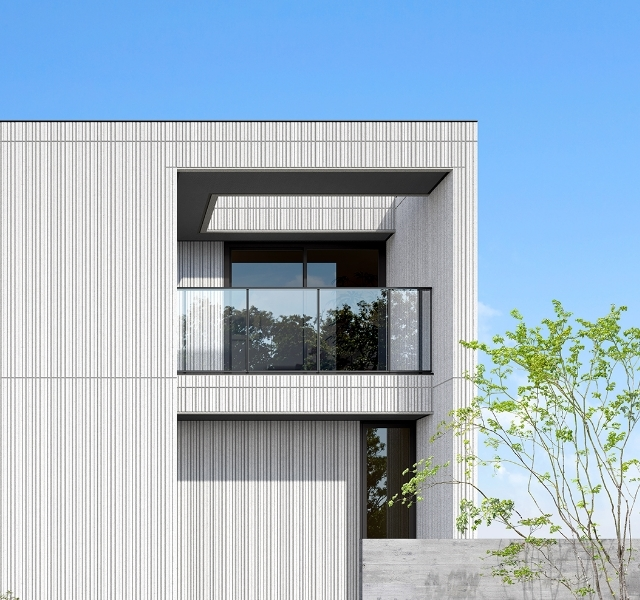
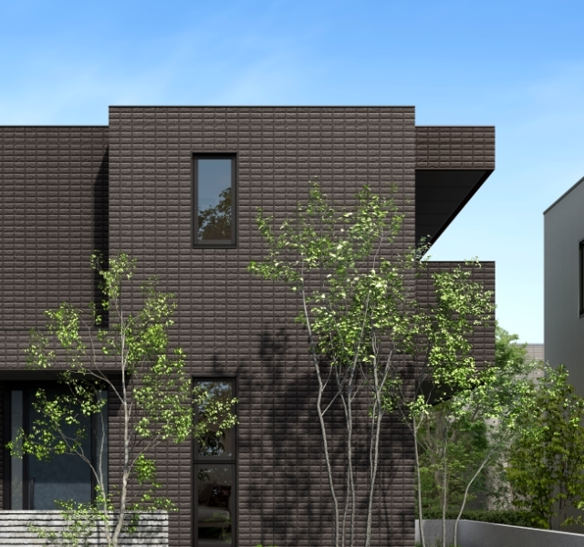
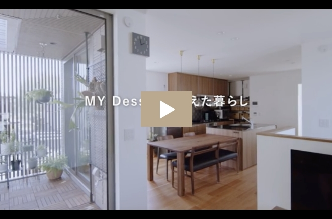
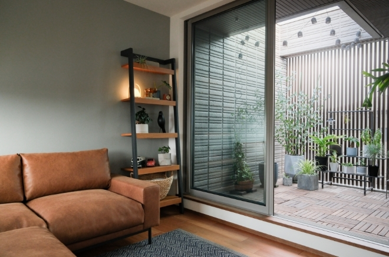
「都市型スクエアデザイン」が代名詞
| 要素 | 特徴 |
|---|---|
| 外観 | 陸屋根（フラットルーフ）＋キューブ型シルエット |
| 外壁仕上げ | ヘーベル板の吹付塗装／ALCタイル調 |
| カラー | 白・ベージュ・グレー・ブラック中心（外壁は基本4色系統） |
| 窓 | 大開口窓。ただしサイズは軽量鉄骨の構造グリッドに制約される |
| 屋上 | CUBICシリーズの特徴。屋上庭園・BBQスペース・太陽光として活用可能 |
標準内装グレード
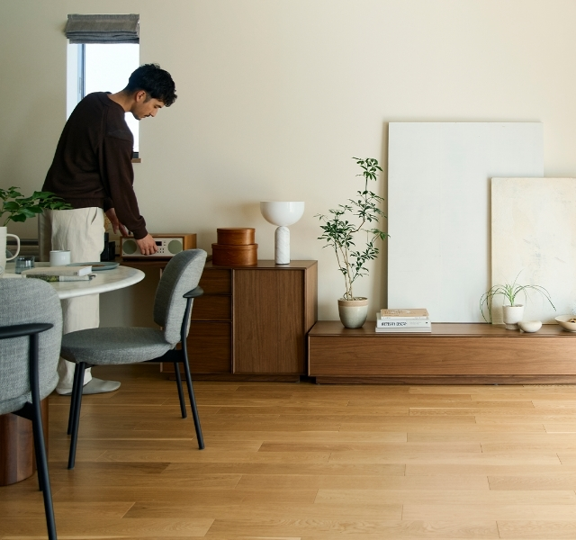
- キッチン・バス・洗面・トイレは各メーカーから選択（LIXIL・TOTO・パナソニック・クリナップなど）
- 床材は複合フローリング標準。無垢材はオプション
- 建具・ドアは標準グレードはシンプル。「可もなく不可もなく」という施主評が多い
デザインの制約
| 制約 | 内容 |
|---|---|
| 軸組のグリッド | 軽量鉄骨ハイパワードクロスは910mmグリッドが基本 |
| ブレース（斜め筋交い） | CUBIC等では壁内にブレース配置が必要。大きな窓や引き込み戸で制約 |
| 外壁色の選択肢 | ヘーベル板塗装は白・ベージュ・グレー・黒が中心。ビビッドな色や木目調は選択肢少 |
| 勾配屋根の選択 | 陸屋根が基本。三角屋根・寄棟屋根はオプションで対応可能だが追加費用 |
ARCHIST視点：ヘーベルの外観は「一目でヘーベル」とわかる個性が強い。都市型スタイリッシュ派には刺さるが、「木の温もり」「洋風」「南欧風」を求める人には向かない。住友林業・三井ホーム・一条工務店グランセゾンとの比較推奨。
⑧ 保証・アフターサービス
ロングライフプログラム
ヘーベルハウスの保証制度の名称。「60年以上住み継げる家」を掲げている。
| 項目 | 内容 |
|---|---|
| 構造躯体保証 | 初期30年（法定10年を大きく超過） |
| 防水保証 | 初期30年 |
| シロアリ保証 | 鉄骨ALC構造のため標準10年（木部のみ） |
| 60年点検システム | 引渡し後1年・2年・5年、以降5年毎に無料点検 |
| 設備保証 | 主要住宅設備17品目10年保証（メーカー保証に上乗せした旭化成独自の長期保証） |
60年保証の条件
| 条件 | 内容 |
|---|---|
| 30年目の集中メンテナンス | 防水再施工・外壁塗装・設備更新などをまとめて実施 |
| 費用目安 | 300〜500万円（家の規模と劣化度による） |
| 実施業者 | 旭化成リフォーム（関連会社）が基本 |
| 他社施工の扱い | 他社でリフォームすると保証打ち切りのリスクあり |
| 継続条件 | 30年目工事後、さらに30年（＝築60年）まで延長保証 |
メンテナンス費の実態
| タイミング | 内容 | 費用目安 |
|---|---|---|
| 10年目 | コーキング補修・簡易点検 | 20〜40万円 |
| 20年目 | 外壁塗装（1回目）・屋根防水 | 150〜250万円 |
| 30年目 | 集中メンテナンス（60年保証の条件） | 300〜500万円 |
| 40年目 | 部分補修・防水確認 | 50〜100万円 |
| 50年目 | 外壁塗装（2回目）・設備全交換 | 200〜300万円 |
| 60年累積 | — | 720〜1,190万円 |
他社との保証期間比較
| ハウスメーカー | 初期保証 | 最大延長 | 60年目までの推定メンテ費 |
|---|---|---|---|
| 一条工務店 | 30年（構造） | 30年（以降は有償延長） | 500〜800万円 |
| 住友林業 | 30年（長期優良住宅取得時） | 60年 | 600〜900万円 |
| 積水ハウス | 30年 | 永年（ユートラスシステム） | 700〜1,000万円 |
| ヘーベルハウス | 30年 | 60年 | 720〜1,190万円 |
| 三井ホーム | 10年 | 60年 | 700〜1,100万円 |
| タマホーム | 10年 | 60年（長期優良住宅） | 500〜800万円 |
「60年保証」の文言だけで判断は危険。実際は30年目に300〜500万円の自社施工工事が条件。ライフサイクルコスト（初期費用＋メンテ費）で比較することが必須。
⑨ 建築期間
各フェーズの期間
| フェーズ | 期間目安 |
|---|---|
| 展示場見学〜仮契約 | 1〜3ヶ月 |
| 仮契約〜本契約（間取り打合せ） | 3〜6ヶ月 |
| 本契約〜着工（詳細設計・確認申請） | 2〜3ヶ月 |
| 着工〜上棟 | 2〜3ヶ月（基礎＋鉄骨建て方） |
| 上棟〜引渡し | 3〜5ヶ月 |
| 合計（初回来場〜引渡し） | 11〜20ヶ月 |
| 着工〜引渡し | 5〜8ヶ月 |
工期の特徴
- 軽量鉄骨・重量鉄骨とも工場で加工された部材を現場で組み立てる（プレハブ工法）
- ヘーベル板（ALC）も工場生産品のため、天候影響が少なく工期が安定
- 一方で鉄骨建て方はクレーン搬入が必須のため、狭小地の施工は難航するケースあり
- 都市部の道路事情・電線移設などで着工遅延が起こることも
ARCHIST視点：工期は全HMでも標準的。ただし都心3階建て（FREX）で狭小地に建てる場合は、クレーン手配・道路使用許可の関係で着工日程が読みにくい。契約時の工期は保守的に見積もっておくこと。
⑩ 客層・向いている人
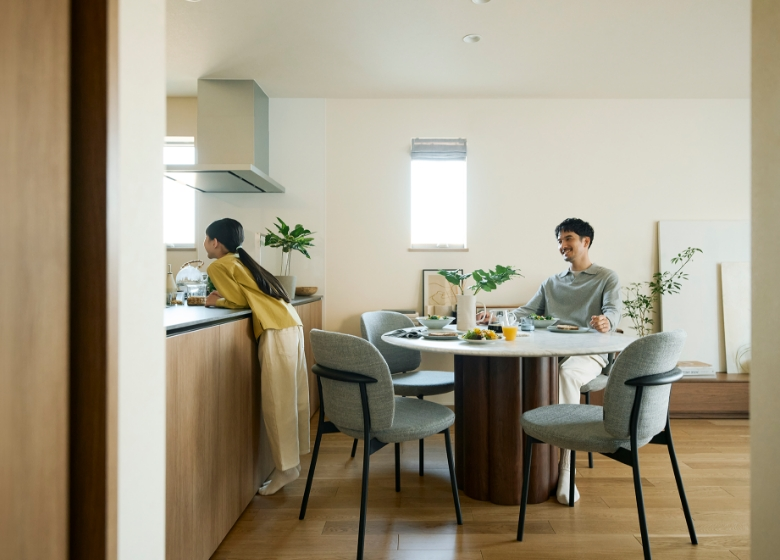
典型的な施主プロファイル
| 属性 | 傾向 |
|---|---|
| 年齢 | 40代〜50代中心（他HMより高め） |
| 世帯年収 | 900〜1,500万円がボリュームゾーン |
| 最低年収目安 | 世帯年収700万円〜（my DESSINなら600万円〜） |
| 家族構成 | 子育て世代＋親世帯同居（二世帯住宅比率が高い） |
| 土地 | 都市部の狭小地・密集地が多い（30〜50坪の土地で3階建てが多い） |
| 価値観 | 「多少高くても長く住める家」「相続資産として残す家」が軸 |
ヘーベルハウスを選ぶ理由TOP3
- 都市部密集地での防火・耐火性能（ALCの1時間耐火認定）
- 60年以上住み継げる耐久性能（相続資産としての価値）
- 地震後も住み続けられる耐震＋制震性能（熊本地震後98.4%が住み続けている）
向いている人
- 都市部の狭小地・密集地で建てたい
- 防火・耐火を最優先（隣家が近い）
- 地震後も住み続けられる家にしたい
- 二世帯・3階建て・賃貸併用を検討
- 相続資産として残す家を建てたい
- スクエア・モダンなデザインが好み
- 世帯年収900万円以上で予算に余裕
向いていない人
- 断熱・気密を数値で最優先（→一条）
- コスパ重視で総額を抑えたい
- 木の温もり・無垢材・自然素材好み
- 間取りの自由度を最優先
- 田舎・郊外の広い土地で建てる
- 営業エリア外に住んでいる
⑪ 他社比較表
総合比較表（6社）
| 比較 | ヘーベル | 積水ハウス | 一条 | 大和ハウス | セキスイハイム | 住友林業 |
|---|---|---|---|---|---|---|
| 坪単価 | 95〜110 | 85〜120 | 85〜105 | 80〜110 | 80〜105 | 80〜130 |
| UA値 | 0.55〜0.60 | 0.46〜0.60 | 0.25 | 0.55前後 | 0.48前後 | 0.46 |
| C値 | 非公表 | 非公表 | 0.59（全棟） | 非公表 | 非公表 | 非公表 |
| 構造 | 鉄骨＋ALC | 鉄骨／木造 | 木造2×6 | 鉄骨／木造 | 鉄骨ユニット | 木造BF |
| 耐火性 | ◎（1時間耐火） | ○ | △ | ○ | ○ | △ |
| 設計自由度 | △ | ○ | △ | ○ | △ | ◎ |
| 保証（最大） | 60年 | 永年 | 30年 | 60年 | 60年 | 60年 |
| 全館空調 | オプション | オプション | 床暖房標準 | オプション | 標準装備 | オプション |
| 向く人 | 密集地・耐火・相続 | デザイン・最大手の安心 | 性能・光熱費 | 天井高・開放感 | 工期短縮・太陽光 | 木質・自由設計 |
ヘーベルハウス vs 積水ハウス（都市型大手2強）
| 比較軸 | ヘーベルハウス | 積水ハウス |
|---|---|---|
| 構造 | 鉄骨＋ALC（都市型特化） | 鉄骨（ダイナミックフレーム）／木造（シャーウッド） |
| 耐火性 | ◎（ヘーベル板1時間耐火） | ○ |
| 断熱 | ○（0.55〜0.60） | ○（0.46〜0.60） |
| デザイン自由度 | △（キューブ型が中心） | ○（幅広いデザイン対応） |
| ブランド認知 | ○ | ◎（業界最大手） |
| アフターサービス | ロングライフ（60年） | ユートラスシステム（永年） |
| 向く人 | 密集地・耐火・相続重視 | デザイン・幅広い選択肢 |
ヘーベルハウス vs 一条工務店（性能特化）
| 比較軸 | ヘーベルハウス | 一条工務店 |
|---|---|---|
| 構造 | 鉄骨 | 木造2×6 |
| 断熱 | ○（0.55〜0.60） | ◎（0.25） |
| 気密 | △（非公表） | ◎（全棟平均0.59） |
| 耐火性 | ◎（ALC） | △（木造） |
| 耐震 | ◎ | ◎ |
| 向く人 | 都市・耐火・相続 | 性能数値・光熱費重視 |
⑫ 後悔事例（施主の声）
後悔1：坪単価が想定より高く、オプションで更に膨らんだ
「坪単価90万円と聞いて契約したが、最終的に坪単価110万円超になった」（入居11年目・主婦ブログ）。太陽光・全館空調・屋上庭園を組むと、本体価格から+300〜600万円が相場。
対策：契約前にフル装備の見積もりを必ず取る。「本体価格表示」に騙されない。
後悔2：屋上・陸屋根の使い勝手とメンテナンス費
CUBICの屋上スペースは「夏は暑すぎて使えない」「虫が多い」「結局洗濯干し場にしかなっていない」。屋上防水は10〜15年毎の再施工が必要（1回50〜100万円）。
対策：屋上は「あれば便利」ではなく「使う明確な用途」が決まっている場合のみ採用。
後悔3：夏の暑さ（2階・3階・屋上直下）
「2階のエアコン効きが弱い」「屋上直下の部屋が夏は耐えられない」（複数ブログ共通）。鉄骨は木造より熱伝導率が高く、熱橋（ヒートブリッジ）問題あり。
対策：西日対策・Low-Eガラス・屋上遮熱施工を設計段階で検討。全館空調オプションも選択肢。
後悔4：冬の寒さ（2016年以前のモデル）
2016年以前のネオマフォーム25mm仕様は「冬のリビングが18℃を下回る」との施主報告多数。中古ヘーベルを買う場合は築2017年以降を推奨。
後悔5：固定資産税が高い
ヘーベル板は「不燃材・耐火構造」扱いで建物評価額が高く算定される。30坪の標準的ヘーベルハウスで固定資産税は年15〜20万円（木造HMより年2〜5万円高い）。
新築減額期間終了（3年目／長期優良5年目）以降の税負担増を見落とす施主多数。シミュレーション必須。
後悔6：デザインが単調・外壁色の選択肢が狭い
「街中でヘーベルハウスはすぐにわかる」「どの家も似たようなキューブ型」。外壁は白・ベージュ・グレー・黒中心。木目調・ビビッド色・左官仕上げは選択肢が少ない。
後悔7：間取り自由度が低い
軽量鉄骨ハイパワードクロスはブレース壁の位置制約あり。910mmグリッドで壁位置が決まるため、25mm単位の微調整は不可。
対策：RATIUS|RD（重鉄制震ラーメン）なら大空間・大開口の自由度が高い。予算許せば検討。
後悔8：30年目の集中メンテナンス費用ショック
「60年保証と聞いていたが、30年目に300〜500万円のメンテナンス請求が来た」。旭化成リフォーム以外で安く済ませると保証打ち切りのジレンマ。
後悔9：営業担当の当たり外れ・転勤
「契約時の担当者と建築時の担当者が違い、仕様が伝わっていなかった」。大手HM共通の課題。重要事項は必ず書面で残す。
後悔10：都市圏以外は対応エリア外
「地方転勤で建てたかったが、旭化成ホームズの営業エリア外だった」。北海道・東北全域・新潟・北陸・四国・山陰・九州の一部・沖縄など非対応エリアが広い。
⑬ 顧客満足度データ
オリコン顧客満足度ランキング（注文住宅）
| 年度 | 総合順位 | スコア | 備考 |
|---|---|---|---|
| 2024年 | 総合3位 | 78.2点 | スウェーデンハウス1位 |
| 2025年 | 総合2位 | 78.7点 | スウェーデンハウス1位 |
| 2026年 | 総合2位 | 78.9点 | スウェーデンハウス12年連続1位（81.0点） |
鉄骨造部門
ヘーベルハウスは鉄骨造ランキング11年連続1位（2016〜2026年）。強靭な鉄骨躯体＋ALC板の組み合わせが高評価を維持。
項目別の強み
| 項目 | 評価 |
|---|---|
| 住居の性能 | 上位ランクイン（特に耐震・耐火） |
| アフターサービス | 上位（60年点検システムが評価） |
| 提案力 | 上位（二世帯・都市型提案が得意） |
| ラインナップの充実 | 中位 |
| 価格の納得感 | 中位（価格は高いが性能を評価） |
施主の満足度傾向
- 高評価：耐震・耐火性能、60年保証、都市型デザイン、賃貸併用の実績
- 低評価：坪単価の高さ、断熱・気密の数値、屋上の使い勝手、外壁色の選択肢
⑭ 坪数別の建築総額シミュレーション
CUBIC（軽量鉄骨・標準仕様）を基準、2026年3月時点の概算。金利1.5%・35年ローン・頭金なしで試算。
| 坪数 | 本体工事費 | 建築総額目安 | 月々返済額（35年/1.5%） |
|---|---|---|---|
| 25坪 | 約2,500万円 | 約3,025〜3,125万円 | 約9.3〜9.6万円 |
| 30坪 | 約3,000万円 | 約3,650〜3,750万円 | 約11.2〜11.5万円 |
| 35坪 | 約3,500万円 | 約4,225〜4,375万円 | 約13.0〜13.4万円 |
| 40坪 | 約4,000万円 | 約4,850〜5,000万円 | 約14.9〜15.3万円 |
| 45坪 | 約4,500万円 | 約5,475〜5,625万円 | 約16.8〜17.3万円 |
商品別の価格シフト（40坪基準）
| 商品 | 坪単価想定 | 建築総額目安（40坪） |
|---|---|---|
| my DESSIN（規格住宅） | 80万円 | 約3,900〜4,100万円 |
| CUBIC（標準） | 100万円 | 約4,850〜5,000万円 |
| RATIUS|GR | 105万円 | 約5,100〜5,250万円 |
| RATIUS|RD（重鉄制震） | 125万円 | 約6,050〜6,200万円 |
| FREX 3（都市型3階建て） | 140万円 | 約6,800〜6,950万円 |
ライフサイクルコスト（60年視点）
| 項目 | 金額目安 |
|---|---|
| 初期建築費（40坪CUBIC） | 約4,850〜5,000万円 |
| 30年目集中メンテナンス | 300〜500万円 |
| 10・20・40・50年目メンテ累積 | 約400〜600万円 |
| 60年間の固定資産税（概算） | 約900〜1,200万円 |
| 60年間総支出目安 | 約6,450〜7,300万円 |
上記は土地代を含まない建物のみの金額。地盤改良が必要な場合は別途50〜200万円（重鉄商品はここが嵩みやすい）。太陽光+150〜250万円、全館空調+150〜250万円、屋上庭園+100〜200万円。オプションは「取捨選択」が総額を抑える最大のレバー。
⑮ ヘーベルハウス固有の注意点
対応エリアが都市圏限定
ヘーベルハウスは全国対応ではない。建築地によっては契約できないケースがある。
| エリア区分 | 対応状況 |
|---|---|
| 関東8都県（東京・神奈川・千葉・埼玉・栃木・茨城・群馬・山梨） | 完全対応 |
| 東海4県（静岡・愛知・三重・岐阜） | 完全対応 |
| 関西6府県（大阪・兵庫・京都・奈良・滋賀・和歌山） | 完全対応 |
| 西日本5県（広島・岡山・山口・福岡・佐賀） | 対応 |
| 北海道・東北全域・新潟・北陸・山陰・四国・長崎・大分・熊本・宮崎・鹿児島・沖縄 | 非対応 |
愛知県の主要対応市：名古屋全区／春日井／小牧／一宮／稲沢／清須／長久手／日進／尾張旭／北名古屋／豊田（一部）／岡崎（一部）／豊橋（一部）。
鉄骨重量の制限
| 商品カテゴリ | 構造重量 | 地盤要求 |
|---|---|---|
| 軽量鉄骨（CUBIC等） | 標準 | 通常の地盤調査対応 |
| 重鉄制震（RATIUS|RD） | 重 | 地盤改良の可能性高 |
| 重量鉄骨（FREX 3/4） | 非常に重 | 地耐力30kN/m²以上要求。改良費50〜200万円 |
30年目集中メンテナンスの拘束力
ヘーベル最大の注意点。「60年保証」を維持するには30年目に旭化成リフォームで300〜500万円の工事を実施する必要がある。
- 工事費用が非開示：契約時には30年目の正確な見積もりは出ない
- 他社施工のリスク：構造・防水を他社で安く施工すると保証打ち切り
- 代替の乏しさ：ヘーベル板・ネオマフォーム等の独自部材のため、他社が扱えない
- LCCへの影響：建築費＋メンテ費の合計で他HMと比較すると見え方が変わる
見えにくいコスト
| 項目 | 内容 |
|---|---|
| 本体価格外のオプション | 屋上防水強化・タイル外壁・全館空調・太陽光・蓄電池で+300〜600万円 |
| 外構費用 | 200〜400万円が相場（狭小地では塀・門扉が嵩みやすい） |
| 地盤改良費 | 重鉄商品では50〜200万円。都市部の狭小地で高くなる傾向 |
| 固定資産税の上振れ | ALC＝不燃耐火材で建物評価額が高く、木造より年2〜5万円高い |
| 保険料 | 耐火構造扱いで火災保険は安くなる（メリット）。地震保険は鉄骨なら割引 |
その他の固有ポイント
- 二世帯住宅・賃貸併用の設計力は業界トップクラス（旭化成ホームズは賃貸事業も大規模）
- 展示場訪問前の紹介登録で3%割引（最大100〜150万円相当）を受けられる
- 決算月（3月・9月）のキャンペーンでエネファーム・太陽光半額などの事例あり
- 屋上設置は防水費用が継続的にかかるため、使用頻度を冷静に想定して決定
⑯ 営業攻略（値引き交渉の現実）
値引きの相場
| 値引き種別 | 相場 | 備考 |
|---|---|---|
| 通常値引き | 本体価格の2〜5% | 交渉なしではほぼ出ない |
| 紹介制度 | 本体価格の最大3% | 展示場訪問前の登録必須 |
| 決算月（3・9月）上乗せ | +1〜2% | 営業成績期末に合わせた裁量 |
| キャンペーン（太陽光・蓄電池半額等） | 100〜300万円相当 | 2022〜2023年の50周年キャンペーンなど |
| モニター割引 | 30〜100万円相当 | 広告利用・見学会協力の代わり |
効果的な交渉方法
- 展示場訪問前に紹介登録：紹介URLから登録することで最大3%割引が確定
- 競合他社の相見積もりを持参：「積水ハウスでこの金額」「セキスイハイムでこの仕様」は交渉の武器
- 決算月を狙う：3月末・9月末の1〜2週間前が営業が最も柔軟になるタイミング
- 予算上限を正直に伝える：「ヘーベルが第一希望だが予算が○○万円オーバー」と早期に共有
- 仕様グレードアップで交渉：価格値引きより「外壁タイル化サービス」「全館空調無償追加」の方が通りやすい
- キャンペーン期間を狙う：50周年級の大規模割引は数年に一度あり
注意すべき営業トーク
- 「今月中に契約すれば特別価格」：基本的に無視してOK。月をまたいでも同水準の条件は出る
- 「この予算ならヘーベルは無理です」：他HMを検討する明確なサイン
- 「最後の1棟枠」：展示場の期末売上調整文句。信じすぎない
⑰ まとめ
- ALC（ヘーベル板）の1時間耐火構造 — 都市部密集地で圧倒的
- 繰り返し大地震に耐える耐震＋制震（熊本地震後98.4%が住み続けている）
- ロングライフプログラムで60年住み継げる設計思想
- オリコン顧客満足度 鉄骨造部門11年連続1位（2016〜2026年）
- 二世帯住宅・3階建て・賃貸併用の設計力は業界トップクラス
- 坪単価95〜110万円と大手でもトップクラスに高額
- 断熱・気密の数値は木造トップには及ばない（C値は非公表）
- 30年目に集中メンテナンス300〜500万円が必要（自社施工縛り）
- 対応エリアが25都府県限定（地方は非対応が多い）
- 外壁色・デザインの選択肢が限定的
こんな人にヘーベルハウスはオススメ
- 都市部・密集地で建てたい（防火性能がフルに活きる）
- 地震後も住み続けられる家を求める（繰り返し震動実験で実績）
- 60年以上住み継ぐ＝相続資産として残すことを考えている
- 二世帯住宅・3階建て・賃貸併用を検討している
- スクエア・モダンなデザインが好み
- 世帯年収900万円以上で予算に余裕がある
こんな人には向いていない可能性
- 断熱・気密性能を数値で最優先したい → 一条工務店
- 総額3,500万円以下のコスパ重視 → タマホーム・アイ工務店・my DESSIN
- 無垢材・自然素材・木の温もりを感じる家 → 住友林業・スウェーデンハウス
- 間取りの自由度と個性的デザイン → 住友林業・三井ホーム
- 田舎・郊外の広い土地で建てる（都市型の強みが活きない）
- 営業エリア外に住んでいる
- 30年目メンテナンス費300〜500万円のコミットが難しい
本質のまとめ
ヘーベルハウスは「価格より、60年以上の安心に投資する人のための都市型防災住宅」。ALC＝ヘーベル板の不燃耐火性能は業界でも唯一無二。鉄骨系HMとしてオリコン顧客満足度鉄骨造部門11年連続1位、総合でも2026年2位（78.9点）という実績。一方で坪単価95〜110万円と高額＋30年目の集中メンテ費用も必要。「数値性能（UA値・C値）」ではなく「実物の質量感と都市防災力」が強み。